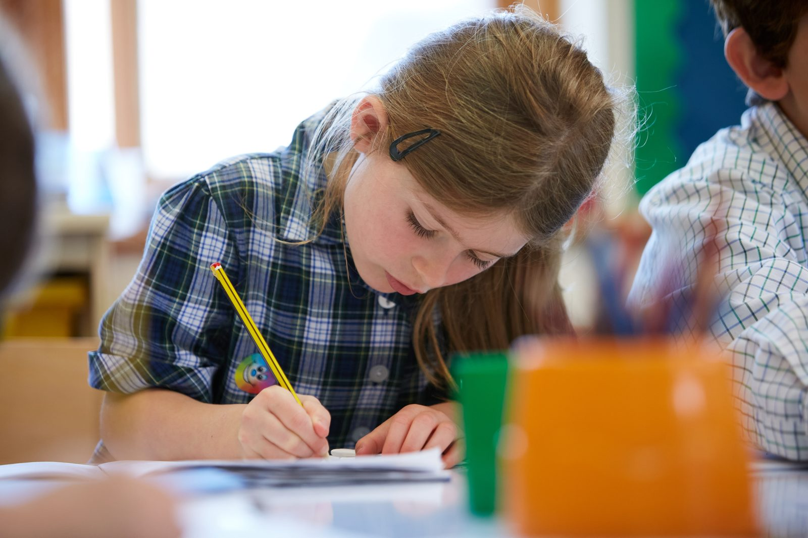

A research-led framework of skills, developed and tracked across every subject — the foundations children carry into senior school and beyond.
In 2014, the Pearson report on the future of skills identified a growing gap between the knowledge young people were acquiring and the wider skills increasingly demanded by higher education, employers and society. The Learning Skills Trust was founded to help schools explicitly develop the learning skills and personal attributes that let young people thrive — not just pass exams.
The PSB actively develops, tracks and celebrates the same six skills across every subject. Awareness of these skills across the curriculum helps pupils understand their strengths and become effective life-long learners.
Critical, creative and independent thought — reasoning, questioning and solving.
Expressing ideas with clarity and confidence, and listening as well as speaking.
Working with others toward a shared goal — the teamwork real life depends on.
Taking initiative, showing integrity and bringing others with you.
Self-direction, resilience and ownership of one’s own learning.
Reflecting honestly, evaluating progress and always looking to improve.
In an Independent Advisory Group report chaired by Professor Sir Roy Anderson, a widening "skills gap" at 18 was identified — a direct consequence of an academic focus. The modern workplace needs broad cognitive skills: solving complex problems, thinking critically, communicating across cultures, collaborating and adapting. The report's "new world" skills formed the heart of the PSB.
The PSB remains research-led, working closely with the Tony Little Centre for Innovation and Research in Learning (CIRL) at Eton College to keep our approach fresh, relevant and forward-thinking.
Every PSB school uses the Core Skills Grid, adapted for different year groups. It turns the framework into everyday practice — helping pupils recognise their strengths, reflect on progress and take ownership of their own development.
See how it’s assessed →
Our Director of Schools, Gregg Davies, is happy to talk through membership and how the PSB could work in your school.